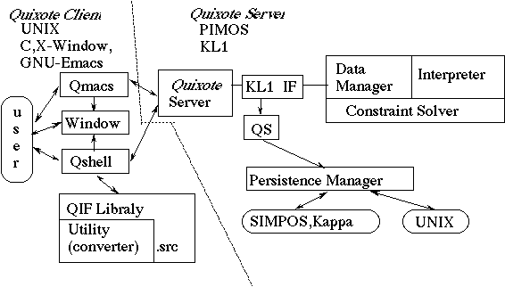

(79) Knowledge Representation Language: Quixote
KLIC version
Machine: UNIX machine
Environment: KLIC, UNIX
Language: KL1, C, Emacs LISP
Source Code: 6 MB
Documents: Manual (Japanese)
Overview
Language system providing fundamental facilities for knowledge
information processing, such as knowledge representation and
inference.
System Configuration

Features
Quixote provides several facilities for developing experimental
systems for knowledge information processing, such as databases,
natural language processing, legal reasoning, and so on. This version
runs on UNIX with user interface based on GNU-Emacs and X-window.
Quixote is a language for deductive object-oriented databases,
and can be seen as an extended CLP language having object-orientation
features, subsumption constraints, and hierarchical modules.
- Object identity defined over extended terms(object terms),
- Constraints over subsumption relation among object terms,
- Property inheritance defined in terms of subsumption constraints,
- Modules and inter-module relations enables modularized and
hierarchical knowledge base, and
- Queries having additional assertions to a knowledge base, and
answers with assumed constraints.
FTP
- README,
- INSTALL.
- Knowledge Representation Language: Quixote (KLIC version)
[700K]

- Knowledge Representation Language: Quixote documents
[104K]
- Knowledge Representation Language: Quixote Client [158K]
- Knowledge Representation Language: Quixote Server [429K]
www-admin@icot.or.jp